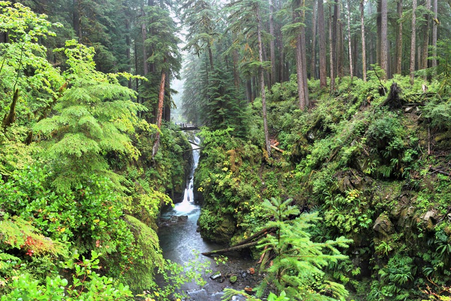

Hoh Rain Forest
The Hoh Rain Forest, located in Olympic National Park, is one of the most magical and lush places in the Pacific Northwest. It is a temperate rainforest known for its extraordinary biodiversity and moss-covered trees that create a fairytale-like atmosphere.
Features of the Hoh Rain Forest
- Hall of Mosses Trail: A short, easy hike that takes you through old-growth forests filled with hanging mosses and vibrant green vegetation.
- Hoh River Trail: A longer trail that follows the Hoh River, offering stunning views of the rainforest and opportunities to spot wildlife.
- Rainfall: The rainforest receives over 140 inches of rain annually, making it one of the lushest environments in the United States.
Wildlife
The Hoh Rain Forest is home to an incredible variety of wildlife. Visitors may encounter black-tailed deer, Roosevelt elk, banana slugs, and countless bird species such as northern spotted owls and woodpeckers. The Hoh River is also a vital habitat for salmon, which play an essential role in the ecosystem.
Best Times to Visit
The Hoh Rain Forest is open year-round, but the best time to visit is during the summer months (June to September) when the weather is relatively dry. Spring and fall also provide unique experiences, with vibrant greenery in the spring and stunning foliage in the fall. If you don’t mind a little rain, winter visits can offer a peaceful and uncrowded experience.
Plan Your Visit
The Hoh Rain Forest Visitor Center serves as a great starting point for your adventure. It provides maps, trail information, and insights into the area's history and ecology. Parking is available, and there are restrooms and picnic areas nearby. Be sure to bring waterproof gear and sturdy shoes for your journey into this magical rainforest!